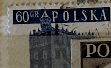
| SOURCE | TITLE| IMAGE MATCH | click to source page |
| eBay | POLAND:1958 SC#807 Used Tarnow T | eBay | 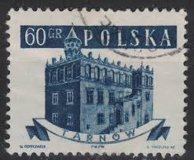 |
| Find Your Stamps Value | Town Halls: Town Hall at Biecz 20g Green stamp price, value | 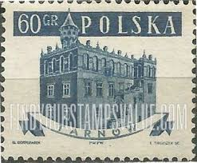 |
| eBay | 3 Number Architecture European Stamps for sale | eBay | 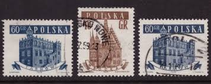 |
| HipStamp | Poland #807 60g Townhall - Tarnow - Used | Europe - Poland, General Issue Stamp / HipStamp | 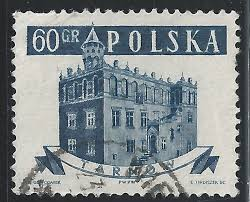 |
| sellosmundo.com | Tarnow. Poland Europe ref. 8793 | 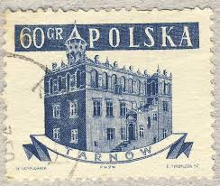 |
| Alamy | POLAND - CIRCA 1958: a stamp printed in the Poland shows Red Flag, Communist Party of Poland, 40th Anniversary, circa 1958 Stock Photo - Alamy | 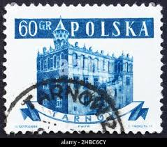 |
| Alamy | Poland postage stamp hi-res stock photography and images - Alamy | 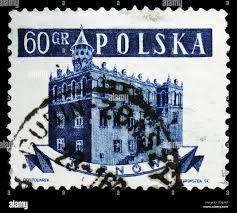 |
| Alamy | Tarnow, Poland. Town hall with an attic typical for Polish Renaissance. Aerial view from above with old town main square Stock Photo - Alamy | 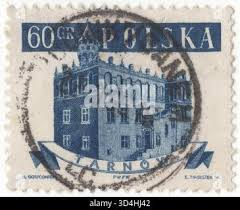 |
| All Numis | Maciej Pasztor Gallery of Stamps | 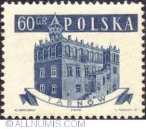 |
| Dreamstime.com | Town Hall of Saarbrucken in Vintage Stamp Editorial Photo - Image of paper, philatelic: 391915556 | 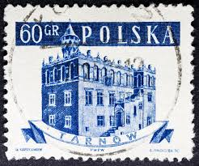 |
| Alamy | POLAND - CIRCA 1958: a stamp printed in the Poland shows Giant Pike Perch, Sander Lucioperca, Freshwater Fish, circa 1958 Stock Photo - Alamy | 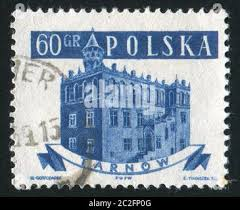 |
| Shutterstock | 4+ Thousand Polish Postal Stamp Royalty-Free Images, Stock Photos & Pictures | Shutterstock | 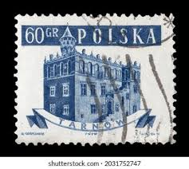 |
| eBay | POLAND 1980 Ck#064 used Envelope. Town hall in Sandomierz. | eBay | 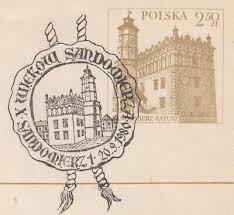 |
| eBay | ANTIQUE POLISH POSTCARD RYNEK RATUSZ SUKIENNICE KRAKOW POLAND | eBay | 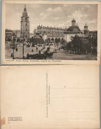 |
| Shutterstock | Poland Circa 1958 Stamp Printed Poland Stock Photo 334457381 | Shutterstock | 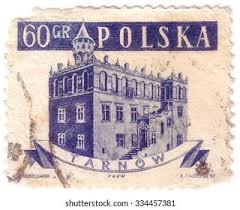 |
| Wikipedia | Głubczyce - Wikipedia | 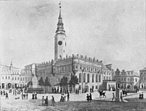 |
| Dreamstime.com | Postage Stamp Printed by Poland Editorial Photography - Image of official, poland: 143633307 | 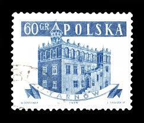 |
| eBay | POLAND (POLSKA) 5 CUT ENVELOPE STAMPS | eBay |  |
| iStock | 4,300+ Polska Stamp Stock Photos, Pictures & Royalty-Free Images - iStock | 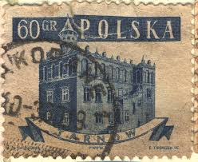 |
| Shutterstock | 14 60gr Royalty-Free Images, Stock Photos & Pictures | Shutterstock | 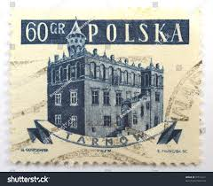 |
| eBay | POLAND 1980 Ck#064 used Envelope. Town hall in Sandomierz. | eBay | 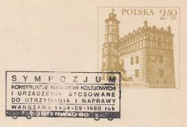 |
| eBay | Eight Poland stamps 1958 - 1977 Tarnow Warsaw Sojuz Apollo Giraffe Dog Chorzow | eBay | 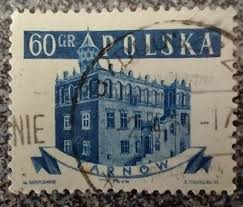 |
| Dreamstime.com | Bronze Model of the Old Town Hall in the Market Square of Krakow in Poland Editorial Stock Image - Image of mall, mariacki: 87682864 | 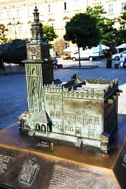 |
| eBay | Poland 1980 - Millenary of Sandomir used stamp SG2691 - x2 | eBay | 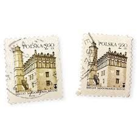 |
| allnumis.com | The autumn in Zakopane" (The festival) - Bulgarian dance (1983), Zakopane - Poland - Postcard - 38729 | 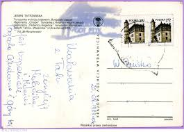 |
| eBay | Sobre usado POLONIA 1980 Ck # 064. Ayuntamiento en Sandomierz. | eBay | 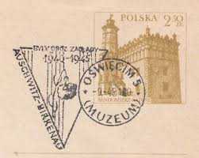 |
| lastdodo.com | Poland-Sandomierz Ratusz 2,50 (1980) - Poland - LastDodo | 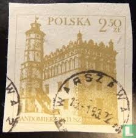 |
| Freestampcatalogue.com | Stamps from the year 1955 - Freestampcatalogue.com - The free online stampcatalogue with over 500.000 stamps listed. | 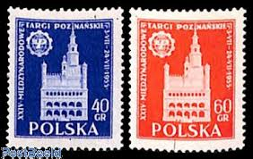 |
| eBay | POLAND 1980 Ck#064 as Envelope. Town hall in Sandomierz. | eBay | 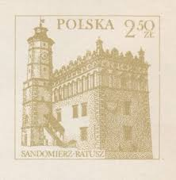 |
| eBay | POLAND 1980 Ck#064 used Envelope. Town hall in Sandomierz. facsimile | eBay | 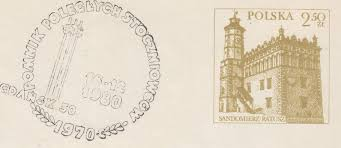 |
| Todocolección | 168409 mnh polonia 1987 centenario del esperant - Buy Antique stamps of Poland on todocoleccion | 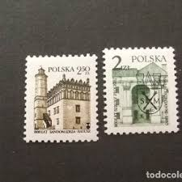 |
| Find Your Stamps Value | Town Halls: Wroclaw 40g Brown Briefmarkenpreis | 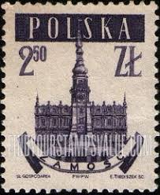 |
| Colnect | Stamp: Town Hall, church archway, Sandomierz (Poland(Polish City Landmarks) Mi:PL 4091,Sn:PL 3709,Yt:PL 3842,Sg:PL 3976,AFA:PL 3984,Pol:PL 3941 📮 | 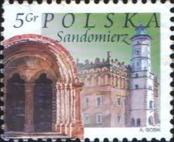 |
| Photos by Patrycja 🇵🇱 (@allthewayrat) · January 22, 2025 | 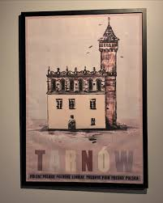 | |
| Dreamstime.com | Tarnow Castle Stock Photos - Free & Royalty-Free Stock Photos from Dreamstime | 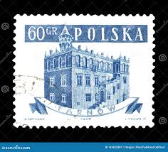 |
| eBay | POLAND 1980 Ck#064I as Envelope. Town hall in Sandomierz. | eBay | 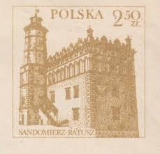 |
| eBay | Tornow Town Hall Stamp - Used, Poland | eBay | 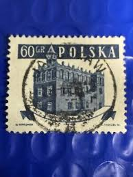 |
| Shutterstock | 11+ Thousand Circa Poland Stamp Royalty-Free Images, Stock Photos & Pictures | Shutterstock | 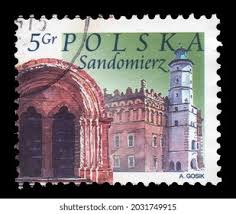 |
| HipPostcard | Antique Polish Real Photo Postcard Rynek Ratusz & Kosciol Krakow Poland Rppc | Europe - East & Southeast Europea - Other / Unsorted, Postcard / HipPostcard | 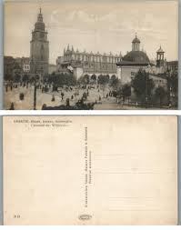 |
| Find Your Stamps Value | Value of polska 1944 1954 stamps | 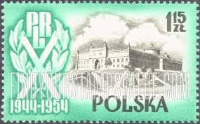 |
| Wikipedia | Pole and Hungarian brothers be - Wikipedia | 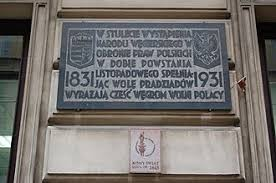 |
| eBay | BL) Poland SG 805-809 (5) Bauwerke Rathäuser Gestempelt unused | eBay | 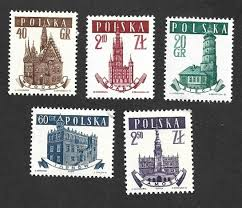 |
| Shutterstock | POLÔNIA — 29 de março de Foto stock 2700728103 | Shutterstock | 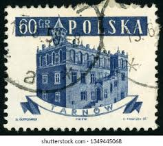 |
| ebid.net | POLAND, Sandomierz, green 2004, 5 Gr on eBid United States | 194271624 | 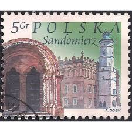 |
| kpolsson.com | Ken P's Postage Stamp Finder | 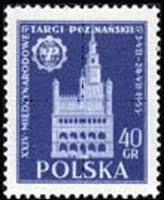 |
| The Itty Bitty Stamp Company | Poland Scott # 2593-2594 Mint Never Hinged – The Itty Bitty Stamp Company | 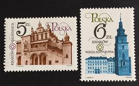 |
| Shutterstock | 16+ Thousand "poland Stamp" Royalty-Free Images, Stock Photos & Pictures | Shutterstock | 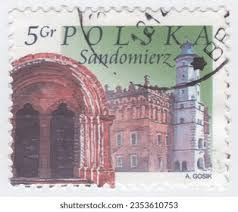 |
| eBay | POLAND 1980 Ck#064 used Envelope. Town hall in Sandomierz. | eBay | 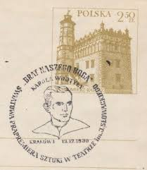 |
| Alamy | Collage of vintage color postcards of historical buildings landmarks in Krakow, Poland, Europe Stock Photo - Alamy | 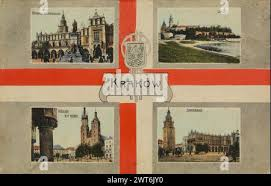 |
| eBay | POLAND # 2403 MNH SANDOMIERZ MILLENNIUM | eBay | 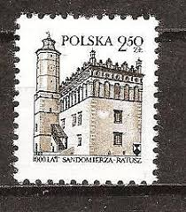 |
| alamyimages.fr | Un timbre-poste imprimé en Pologne, spectacles Tarnow ville médiévale, vers 1958 Photo Stock - Alamy | |
| Alamy | 60 gr hi-res stock photography and images - Alamy | |
| RARA-Vienna | STARTLISTE | |
| idealpublication.in | 1945 Poland (No.376) Imperforated | |
| TikTok | 10 największych miast w województwie opolskim | TikTok | |
| allnumis.com | 50 Groszy 1935 - Cloth Hall, Cracow, Castle-Palace-Building - Poland - Stamp - 7473 | |
| Todocolección | polonia 1958 - usado - Buy Antique stamps of Poland on todocoleccion | |
| eBay | POLAND 1955, BLOCK 15 / VARIETY B1, MNH | eBay | |
| PICRYL | Rynek i ratusz w Tarnowie - Zygmunt Vogel - PICRYL - Public Domain Media Search Engine Public Domain Search | |
| Colnect | Stamp: Town Hall Tower (Poland(Krakow Monuments Restoration) Mi:PL 2890,Sn:PL 2594,Yt:PL 2702,Sg:PL 2905,AFA:PL 2777,Pol:PL 2742 📮 |